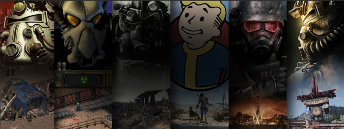

The Wasteland Isn't The Only Thing Wild
Welcome to the wasteland's weirdest history lesson. Vault-Tec promised safety from nuclear fire, but behind every sealed door lurked an experiment in human misery, madness, or just plain bad ideas. Here you'll find breakdowns of the vault experiments, what went wrong (spoiler: everything), and the unlucky souls who made these vaults unforgettable.

Fallout Games
Personally, nothing tops New Vegas. Would love to see a remaster but I doub't I'll live to see Fallout 6 released at that.
- Fallout 1997
- The original classic. You're the Vault Dweller from Vault 13, sent out to find a water chip before your people die of thirst. Along the way, you uncover a mutant army threatening humanity. Goal: Save your vault and stop the Master's plan for forced mutant evolution.
- Fallout 2 1998
- Set decades later. You play the Chosen One, descendant of the original Vault Dweller, trying to save your starving tribal village. Goal: Find the Garden of Eden Creation Kit (GECK), then take down the Enclave, who are plotting to wipe out everyone not “pure” human.
- Fallout 3 2008
- You're the Lone Wanderer from Vault 101, chasing after your runaway dad in the ruins of Washington D.C. Goal: Reunite with your father and complete Project Purity, a massive plan to restore clean water to the wasteland (while dodging the Enclave).
- Fallout New Vegas 2010
- You're the Courier, left for dead in the Mojave Desert after being shot in the head. Goal: Recover the mysterious Platinum Chip and decide who will control New Vegas — Mr. House, the NCR, Caesar's Legion, or yourself.
- Fallout 4 2015
- You're the Sole Survivor from Vault 111, who wakes up 200 years after the bombs fall. Your spouse is murdered, your baby is kidnapped, and you're out for answers. Goal: Find your missing son, and shape the future of the Commonwealth by siding with one of four major factions.
- Fallout 76 2018
- A prequel set in West Virginia. You're one of the first people to emerge from Vault 76, tasked with reclaiming the wasteland after the bombs. Goal: Rebuild society, survive mutated horrors, and uncover what happened to the region's original inhabitants.